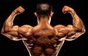
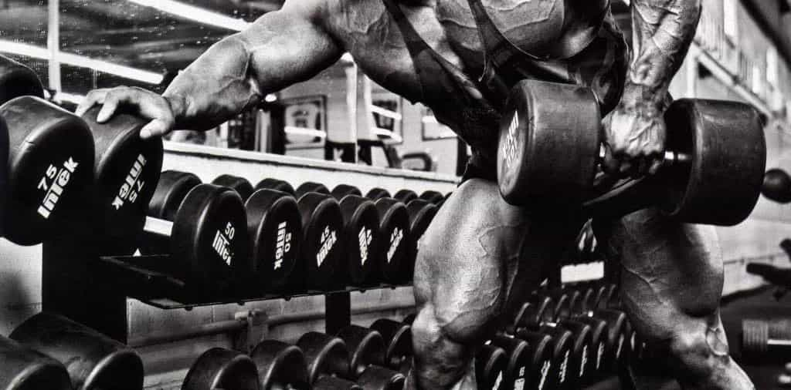

Please keep an open mind to what you’re about to read here. I work out in all different styles and throughout the years, I’ve experimented with a lot in the gym. The funny thing is that much of what I would have told you was pure nonsense years ago; I’d tell you the exact opposite today!
If you told me about full body routines performed three to four times per week, training the same muscle group daily, or implementing high reps for growth, I would have told you that you were crazy! But no, not anymore, because I had to figure some of these things out for myself.
Remember, it takes keeping an open mind to continue to break through plateaus and continue to get results. You cannot do the same thing all of the time and continue to see change.
Come With Me To Bodybuilding Hell Week
What is Bodybuilding Hell Eeek? Simple, it’s a week straight of the same muscle groups torched every single day. That’s right, if you did chest yesterday, then guess what? You’re doing it again today! You’re sore? Good… I don’t care.
This week of training muscle groups every day may not make much sense to you right now, but it will when you see the results a week or two after Bodybuilding Hell Week. Workouts will be performed in freestyle fashion, meaning you do as many sets and reps as you feel necessary to achieve a good pump.
Unlike other cookie-cutter routines, I’m not here to give you the perfect number of reps and sets, because there isn’t one. Think for yourself! Do what you feel and trust in yourself!
You will be hitting all muscle groups for seven days in a row. This means full body workouts for one week straight, no bullshit here! Now, here is the thing about this week of all-out-war: exercises and sets can change daily.
Let’s say I’m training my legs and yesterday I performed squats: today I may just perform leg extensions, lying leg curls, and calves, but no pressing if I’m just not feeling it.
Or let’s say I did some heavy chest presses the day before. I may just do several sets of cable flys the next day and continue to stimulate my chest, but ditch pressing that day to assist with my recovery ability to get back to pressing tomorrow.
This is totally a freestyle type of workout here, remember that!
There are days where I may do seven sets of dumbbell curls with 12 to 15 reps a set, and other days where I only do eight reps a set and three work sets. Maybe one day I’m doing dumbbell curls and the next day I’m doing barbell curls; I really just do what I feel like during this week of training brutality.
So we are covering the entire body here every single day for one week straight. Now, why would I do this to myself and expect results? I know all about over-training and I’m actually partial to infrequent high intensity training sessions geared towards maximum recovery. So why would I believe in this?
Change, Adaptation, And Stress
Okay, you know how I just said that I was partial to less frequent high intensity workout sessions? That’s precisely the reason I believe in Bodybuilding Hell Week! It’s a great shakeup for a week before going back to less frequent weight training sessions.
What I’ve found happening from Hell Week is that the body quickly adapts to the daily training (the same way a soldier would adapt to the same daily PT exercises) and you still perform and carry on. Also, here’s something else you probably won’t hear about anyplace else: soreness can help engage more muscle focus.
That’s right, so you may be sore from the day before. Well, now the next day when you perform that same exercise, you feel the muscle working right from the jump due to the soreness. What does that make you do? It makes you think about the muscle more because you cannot help it! After a set or two, that soreness doesn’t seem quite as bad, and once again you’re blasting through it with another pump!
Now, you may think I’m crazy here, but I’ve actually had days where I was stronger performing the same muscle group on the second day in a row! I know, crazy, right? But if you have never tried this, then you won’t know it.
Okay, so not only do we focus more on the muscle at hand since we are already sore from the day prior, but we are creating a new stress by training muscles daily. The body wakes up and says, “Whoa, what’s going on here? He’s making me do this every day? I better adapt!” Yes, it’s a week of constant stress and adaption.
Nutrition During Bodybuilding Hell Week
As far as nutrition goes during this intense week of training, I would recommend trying to hold to a regimented caloric deficit daily. For a female, this might be as low as 1,200 to 1,500 calories a day (it takes a minimum of 1,200 calories a day to even be considered a balanced diet, so I don’t recommend any lower), and for most males, this will fall between 1,800 to 2,800 calories each day.
It’s going to be natural to get hungrier since you are placing so many demands on your muscles every day, but be strict and stick to your diet. There is a reason sticking to your diet is important during this week of daily training.
I like to focus on a roundabout caloric intake per meal and six meals per day during this week of training. It’s far easier to do this and rotate through different foods that equal the same amount of calories than to eat like my dog does each day (the same Purina One food he’s sick to death of)!
If you’re a female weight trainer, then your breakfast may be something as easy as 100 calories from a banana and 250 calories from a low carb egg wrap. Then lunch may be another 350 total calories from something as simple as Greek yogurt and a protein smoothie shake.
Your other meals are simple meals that are focused around clean foods and hitting that caloric restricted number.
If you’re a male, then meals might be a little heavier, but still leave you hungry and in restriction. Something like four whole eggs and half a cup of dry measure oats would put you right at 390 calories. Now, put together meals that are each a caloric number that equals 500 calories below your TDEE for your daily caloric intake.
Women, aim for half a gram per pound of body weight in protein consumption; men, aim for one gram per pound of body weight. But do not obsess over protein more than daily caloric restriction!
Remember, This Is A Freestyle Workout That You Make Up
Do not forget that this is a freestyle workout that you develop. Be sure to challenge yourself, but there is no reason to spend over ninety minutes in the gym trying to do every single little exercise. Hit an exercise or two that stimulates a specific muscle and move on to the next muscle group.
You should be able to get through the entire body in ten exercises or less.
Also, there is no reason to blast a muscle into oblivion with the same exercises every day. Don’t constantly do the same flat bench press daily when you can mix it up between flat press, incline, machines, and flys.
I want you to clear your mind of all of the mainstream bullshit during Bodybuilding Hell Week and put yourself through the motions day in and day out… every muscle group every day for one entire week straight! This will be extremely demanding, but it can be done.
Look at how inmates work out. You’ll see that although the described routines in that link do split body parts up, some of those exercises are staples that have been used for probably a century now. Inmates routinely do the same physical activity day in and day out and are able to achieve impressive physiques, and that’s with nutrition that often isn’t up to par.
That tells me that if you took just one week to hit all of your muscles daily, then I think you’d get some quick results from it. I feel like your body would adapt to it and the fatigue wouldn’t totally set in 100 percent until the week was finished. By then, you’re back to training in a different fashion and giving muscles more recovery time.
I’m not talking about just a conditioning type workout here where it’s a daily routine of push-ups, pull-ups, and sit-ups (although that can get great results). I’m talking about traditional gym training weight exercises done in a daily pattern and intended to put the body under more demands than our bodies own resistance.
When And How Do The Changes Take Place?

Okay, here is the thing about Bodybuilding Hell Week: you’re going to see the changes taking place within the week or two after the week-long intense routine is complete. Your body will sort of play “catch up” after this week of training.
Not only will your body catch up to the extreme demands you’ve placed upon it, but it’ll use the next two weeks to grow from the added recovery.
Muscles will become more volumized-looking, pumps will become bigger, and you’ll probably even feel bigger just walking around. That delayed recovery is pretty much the basis on this routine: smash the body for a week and then watch it adapt the next couple weeks before its broken down too much. We wouldn’t want to do something like this longer than one week for the reason that we don’t want to catabolize muscles. But in just one week, you need not worry about that!
Here’s another key point I’d like to mention: changing up the diet after this week of added training intensity under a regimented number of restricted calories will get you results as well. It’s like your body won’t know what hit it. the next two weeks following Hell Week would be a time I’d increase my calories by about 500 to 1,000 calories a day and pay attention to what happens with my look.
I’m guessing that if you’re like me, you’re only going to volumize muscles and look bigger rather than slap on any fat. I know some of my methodologies sound way, way outside of the norm, but you know what training normal used to get me? Normal results! I don’t know about you, but I’m not doing this to look like the average Joe. I want more than that!
Would I recommend something like this to a beginner? No, I wouldn’t. I see nothing wrong with daily conditioning exercises, calisthenics, and some moderate weight training for a beginner. But what I’m talking about here is brutal punishment executed every single day beyond a level suitable for a beginner.
Think of this as a way to shake things up a bit once you’re seasoned and gains are harder to achieve, as I show on my Youtube channel and web site. Don’t knock it until you try it and if you do try it… go kill it!
Read More: A Beginner’s Guide To Breaking Bodybuilding Plateaus